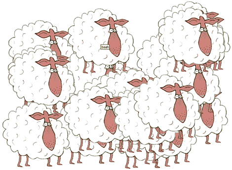
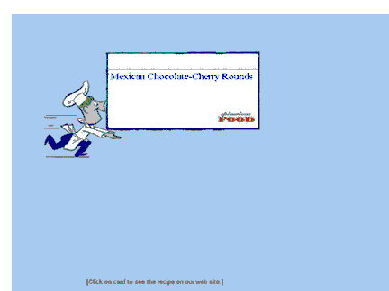
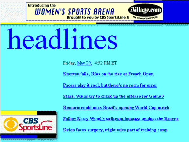
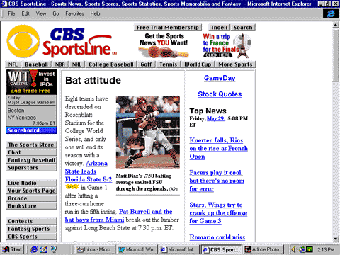

|
| ||
|
| ||
June 26, 1998
Contents
Introduction
Don't Try to Save the World
Performance Issues
Don't Rely on the Mouse
For More Information
Summary
Active Channel™ screen savers are one of the new features included with Internet Explorer 4.0's Active Desktop™ interface. These screen savers can be roughly divided into two types: content updated from channel subscriptions or stand-alone animations. In either case, they present a wonderful opportunity to get your message onto people's desktops. This piece provides some food for thought and our recommendations on how to design your own screen saver.
It's important to keep in mind that we're talking about screen savers here. Presumably people are doing something else when a screen saver is active (certainly their bosses hope they are). Which leads us to our first recommendation: keep it simple. Because you won't have your subscribers' full attention for anything longer than a few seconds, design your screen saver accordingly. Make it easily digestible -- even fun. Loud or garish pleas to visit a Web site or use a product are likely to be shut off. If you want to show some timely content, limit yourself to headlines and offer users the option of clicking through to your site for more information.
In no way are we discounting the importance of screen savers. Entire companies owe their success to them (can you say "Flying Toasters"?). But the most successful "traditional" screen savers are mostly whimsical exercises: funny or intriguing animations. Of course, Active Channel screen savers create an opportunity to do some "branding," but a little discretion is the better part of valor.
One particularly cute example of a light-hearted screen saver comes from the New Scientist  site (also check out their channel
site (also check out their channel  ). Their screen saver, which we assume is a tongue-in-cheek reference to Dolly, the infamous "cloned" sheep, is a simple sheep image added willy-nilly to the screen. Soon the screen is overrun. Although not traditional branding (where's the logo?), it reminds you of their channel and all the topics they tackle, because you downloaded it from New Scientist and know the screen saver is theirs.
). Their screen saver, which we assume is a tongue-in-cheek reference to Dolly, the infamous "cloned" sheep, is a simple sheep image added willy-nilly to the screen. Soon the screen is overrun. Although not traditional branding (where's the logo?), it reminds you of their channel and all the topics they tackle, because you downloaded it from New Scientist and know the screen saver is theirs.

Figure 1. New Scientist's simple repeating sheep image screen saver
Yes, odd as it may seem, screen savers do raise performance issues. How you choose to implement your screen saver can determine its success. First, try to limit the amount of time it takes to load once it's activated. By default, screen savers are active for only 30 seconds (although users can change that value) before cycling to another. If it takes your screen saver 15 or so seconds to load, it won't make much of an impression (unless your boot-up message is particularly enticing).
Also make sure your screen saver runs smoothly once it is loaded. Clunky images galumphing across the screen will not build a dedicated following. It's important to remember that Active Channel-based screen savers are really full-fledged Web pages. Moreover, they're Web pages that support all the features of Internet Explorer 4.0. So use DHTML to control the positioning and movement of images and text (Nadja Vol Ochs tells you how in Filter It, Scale It, Move It, Hide It). It's faster. Color fills, for example, will render much more quickly than a bitmapped image. The same goes for vector graphic controls.
A good example of fills and movement occurs with the Epicurious Food screen saver. The animation is snappy and fun, and because it also uses data binding to vary the content, it changes enough to warrant repeated viewings.

Figure 2. Epicurious Food channel uses animation and data binding
Screen savers can be configured to deactivate by either moving the mouse or clicking the Close icon in the upper right corner of the screen. If users set their Active Desktop to de-activate on mouse movement, they can't take advantage of click-throughs to access specific channel or site features. To protect against frustrating your subscribers, make sure that if they do decide to follow up an item from the screen saver, it's easily found on your site. In the case of screen savers that are served as news or sports tickers, populate your home page with the same information.
CBS Sportsline  does an excellent job of making sure its screen-saver headlines are duplicated on its home page, as the two graphics below show.
does an excellent job of making sure its screen-saver headlines are duplicated on its home page, as the two graphics below show.

Figure 3. A headline screen in CBS Sportsline's screen saver

Figure 4. Screen-saver headlines duplicated on Sportsline's home page (right column)
If you're thinking of using <IFRAME>s, keep in mind that when<IFRAMES> are used in the screen saver, they do not clear the desktop after a user click, so a series of frames within frames can occur.
With Internet Explorer 4.0, screen savers are now another place to use HTML and related Web technologies. There isn't yet a whole lot of information specifically about screen savers. Rather, for presentation and display of screen saver files, you should check into the more general technologies available: DHTML, data binding, and DirectAnimation™. Read a reference to screen savers in the Internet SDK here. For a discussion of screen savers in the context of a more general Channels tutorial, check out George Young's CDF 201: Beyond the Basics.
For information on DirectAnimation controls included in Internet Explorer 4.0, start here. If you want to go into more detail, the DirectAnimation SDK should keep you occupied for a while.
should keep you occupied for a while.
Internet Explorer 4.0 opened up a new world of possibilities for screen savers. Because screen savers are no longer relegated to an isolated set of .scr files, developers can now include HTML-based screen savers tied to their channel content. As a result, news-based sites can have their latest headlines scroll across a subscriber's idle computer. Alternatively, light-hearted animations can soothe tired eyes, or simply add a smile to someone's day. What you do with screen savers is limited only by your imagination.
Screen savers are thus a wonderful opportunity to increase your viewing audience (other people will no doubt comment on them and request the URL) and, just as important, keep existing subscribers coming back for more. We don't claim that our list of tips above is exhaustive, however. If you have developed your own set of tips or gotchas, or even an innovative use of an Internet Explorer control, we'd love to hear from you.
Did you find this material useful? Gripes? Compliments? Suggestions for other articles? Write us!
© 1999 Microsoft Corporation. All rights reserved. Terms of use.